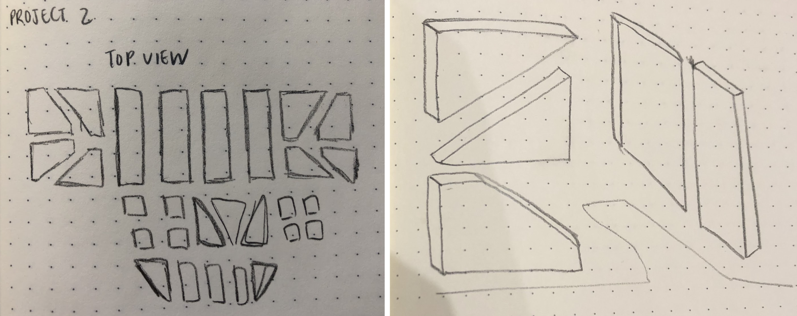

The images below show the object I chose to translate from the RISD museum.
The way light interacts with the materiality of the metallic surface lends a sense of depth and dimension that makes the hard surface look so beautifully woven together.
I was most drawn to the color and texture of this object, namely its hues under different angles of light. The chromatic bronze appears both gleaming and rusted, matte but shiny. In my sketches, I attempted to break down some of its basic shapes and isolate them. Ultimately, the elegance comes from these basic shapes and the different hues inspired by web translation.
I attempted to portray the depth and dimension of the chair on the web, using the web as a dynamic canvas to challenge 2-D constructions.
I want to translate a sense of dimension, rigidity, but also malleability to portray the metallic surface and metal’s behavior.